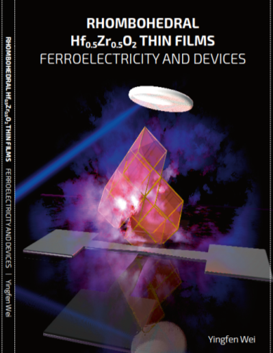

Rhombohedral Hf0.5Zr0.5O2 thin films: Ferroelectricity and Devices

Supervisor: Prof. B. Noheda
Group: Nanostructures of Functional Oxides
This thesis work during my PhD study at University of Groningen reports a new polar r-phase, with large polarization and robustness. According to the crystal studies on different substrates, specific guidelines are given on how to achieve this new ferroelectric r-phase in HZO thin films. Taking advantage of the great properties of HZO thin films with this new phase, the films were integrated as tunnel barriers into multiferroic tunnel junction. The properties of this device are studied, which give some insights for the future possible application.